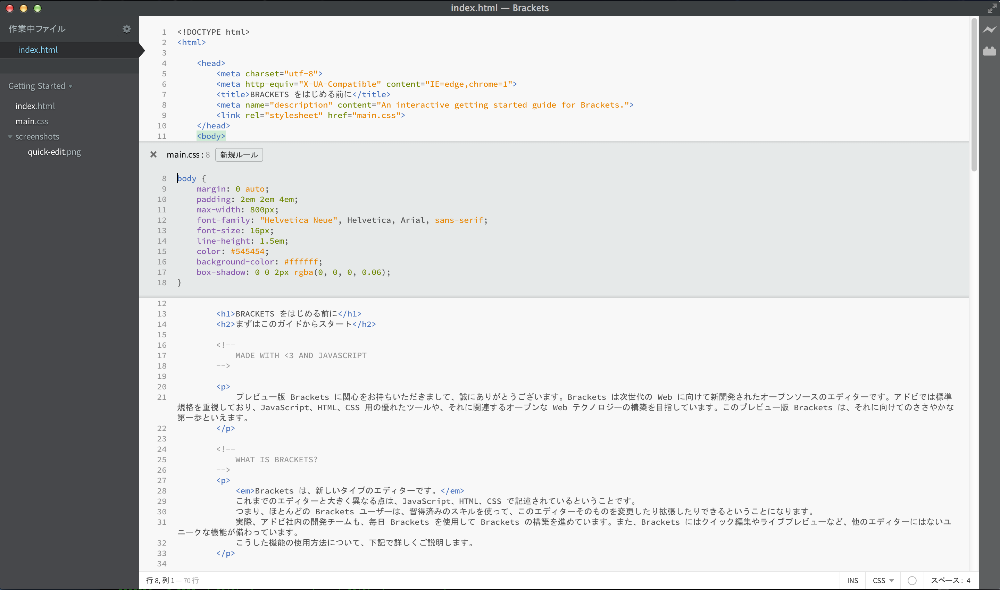

Web デザインを認識する最新のオープンソースエディター、Brackets をご利用いただき、ありがとうございます。軽量でありながらパワフルなコードエディターでのビジュアルツールとエディターとの融合により、必要なときに必要なだけのサポートを利用することができます。
Brackets は、新しいタイプのエディターです。 Brackets にはクイック編集やライブプレビューなど、他のエディターにはないユニークな機能が備わっています。Brackets は JavaScript、HTML および CSS で記述されています。つまり、ほとんどの Brackets ユーザーは、習得済みのスキルを使って、このエディターそのものを変更したり拡張したりできるということになります。実際、アドビ社内の開発チームも、毎日 Brackets を使用して Brackets の構築を進めています。主要機能の使用方法について、下記で詳しくご説明します。
Brackets を使用して独自のコードを記述するには、自分のファイルを格納したフォルダーを開きます。 現時点で開いているフォルダーが Brackets によって「プロジェクト」として処理され、そのフォルダー内のファイルのみがコードヒント、ライブプレビュー、クイック編集などの機能で使用されます。
このサンプルプロジェクトを終了し、コードを編集する準備ができたら、左側のサイドバーのドロップダウンを使用してフォルダーを切り替えます。この時点で、ドロップダウンには「はじめに」が表示され、現在表示されているファイルが格納されたフォルダーが選択されています。ドロップダウンで「フォルダーを開く...」を選択して、使用するフォルダーを開きます。 ドロップダウンを使用して、このサンプルプロジェクトが含まれるフォルダーなど、以前に開いたフォルダーに切り替えることもできます。いくつものドキュメントを行ったり来たりして、コードの文脈を見失うようなことはもうありません。HTML ファイルの編集中にショートカットの Command+E キーまたは Ctrl+E キーを使用すると、クイック編集用のインラインエディターが開き、関連する CSS がすべて表示されます。 ここで CSS を調整して Esc キーを押せば、HTML の編集に戻ることができます。また、CSS ルールを開いたままにしておけば、HTML エディターの一部として使用できます。カーソルがクイック編集用インラインエディターの外にあるときに Esc キーを押すと、CSS ルールはすべて折りたたまれます。また、クイック編集には、ネストされたルールなど、LESS および SCSS ファイルで定義されたルールも備わっています。
この機能を実際に使用するには、上部の タグにカーソルを合わせた状態で Command+E キーまたは Ctrl+E キーを押します。すると、上部に CSS クイック編集エディターが開き、適用する CSS ルールが表示されます。クイック編集は、クラスおよび id 属性にも使用できます。また、クイック編集は LESS および SCSS ファイルでも使用できます。 新規ルールも同じように作成できます。上部の タグのいずれかをクリックし、Command+E キーまたは Ctrl+E キーを押します。そのとき既存のルールがなければ、「新規ルール」ボタンをクリックして に新規ルールを追加できます。 同じショートカットを使用して、JavaScript の関数、カラー、アニメーションタイミング機能など、他のエレメントも編集できます。アドビでは、この機能を継続して強化していきます。
現時点ではインラインエディターをネストすることはできませんので、クイック編集を使用できるのは、カーソルが「フルサイズ」のエディター内にある場合に限られています。
私たちはずっと、保存とリロードの繰り返し作業に煩わされてきました。エディターで編集して保存し、ブラウザーに切り替えて更新してから、ようやく結果を確認できるという、あの作業です。 Brackets では、もうあの作業を行う必要はありません。
Brackets では、HTML や CSS のコード編集を行いながら、ローカルブラウザーにライブ接続し、編集結果をリアルタイムでプレビューできます。ブラウザーベースのツールの中には、現時点でもこれと似たことが可能なものもありますが、Brackets の場合は最終的にコードをエディターにコピー＆ペーストする必要がありません。コードが実行されるのはブラウザー上ですが、コードがある場所は最初からずっとエディター内なのです。
Brackets では、HTML や CSS の編集内容がどのようにページに反映されるかを、簡単に確認することができます。Brackets で CSS ルール上にカーソルを置くと、ブラウザー上でそのルールに対応するエレメントがすべてハイライト表示されます。これと同じように、HTML ファイルを編集しているときも、ブラウザー上でそれに対応する HTML エレメントがハイライト表示されます。
お使いのコンピューターに Google Chrome がインストールされていれば、これを実際にお試しいただくことができます。Brackets ウィンドウの右上にある稲妻アイコンをクリックするか、Command+Alt+P キーまたは Ctrl+Alt+P キーを押します。HTML ドキュメントでライブプレビューが有効になっていれば、リンクされている CSS ドキュメントはすべてリアルタイムで編集可能です。 Brackets でローカルブラウザーとの接続が確立されると、アイコンがグレーから金色に変わります。 この状態で、上部の タグにカーソルを合わせます。すると、Chrome 上で画像の周囲が青くハイライト表示されます。次に、Command+E キーまたは Ctrl+E キーを押して、定義済みの CSS ルールを開きます。 枠のサイズを 10 ピクセルから 20 ピクセルに変更するか、背景色を「透明」から「ホットピンク」に変更してみてください。Brackets とブラウザーが同時に動作していれば、この変更内容が瞬時にブラウザーの表示に反映されるのを確認できます。現時点で Brackets のライブプレビューが対応しているのは、HTML と CSS のみです。JavaScript ファイルの場合、現行バージョンでは、編集内容を保存した時点で自動的にリロードされます。現在アドビでは、JavaScript のライブプレビュー対応を進めています。また、ライブプレビューの可能なブラウザーは Google Chrome のみですが、将来的には主要なブラウザーすべてでこの機能を利用できるようにしたいと考えています。
まだ 16 進数値または RGB 値に対応するカラーコードを覚えていなくても、Brackets なら使用されているカラーを正確に、しかもすばやく簡単に確認できます。CSS でも HTML でも、カラー値またはグラデーション上にカーソルを重ねるだけで、そのカラーやグラデーションが自動的に表示されます。画像の場合も同様で、Brackets エディターで画像リンク上にカーソルを重ねると、その画像のプレビューがサムネイルで表示されます。
クイックビューを実際に使ってみるには、このドキュメントの上部にある タグにカーソルを合わせます。その状態で Command+E キーまたは Ctrl+E キーを押すと、CSS クイック編集エディターが開きます。あとは、CSS 内でカラー値のどれかにカーソルを重ねるだけです。また、グラデーションに対してこの機能を使ってみるには、 タグで CSS クイック編集エディターを開き、背景画像の値にカーソルを重ねます。画像のプレビューを試す場合は、このドキュメントの前半に掲載されているスクリーンショット画像にカーソルを重ねてみてください。Brackets に組み込まれた優れた機能に加え、拡大を続ける大規模なコミュニティで、デベロッパーらが何百もの便利な拡張機能を構築しています。Brackets にない機能を必要としたとき、ほぼ確実に構築済みの拡張機能が見つかります。使用可能な拡張機能の一覧を参照または検索するには、ファイル／拡張機能マネージャー を選択し、「入手可能」タブをクリックします。使用する拡張機能が見つかったら、その横の「インストール」ボタンをクリックします。
Brackets はオープンソースのプロジェクトです。世界中の Web 開発者が、優れたコードエディターの構築に貢献しています。さらに多くの人々が、Brackets の拡張機能の構築に携わっています。 ぜひ、このプロジェクトについてご意見・アイデアをお寄せください。プロジェクトへの直接的なご参加もお待ちしております。